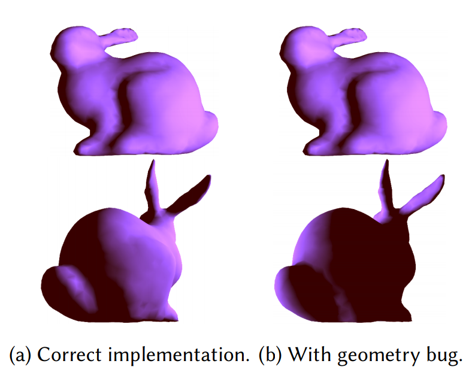

Benoit Steiner, Chris Cummins, Horace He, Hugh Leather
NeurIPS Workshop on ML for Systems
MLSys 2021
[Paper]
TL;DR: For the task of automatically optimizing deep learning workloads (e.g: matrix multiplies), we demonstrate that it's possible to utilize reinforcement learning to generate deep learning kernels much faster than previous methods that relied upon greedy cost models and autotuning. We outperform Halide/AutoTVM while generating schedules >100x faster.
Horace He*, Qian Huang*, Abhay Singh, Ser-Nam Lim, Austin Benson
Under Review
[Paper]
TL;DR: We demonstrate that for many popular transductive node classification tasks, state-of-the-art GNN models can be out-performed by a shallow MLP prediction followed by the post-processing of two Label Propagation variants. This simple framework directly uses label information and on some benchmarks, can outperform SOTA GNNs with orders of magnitude less parameters and runtime. Highlight result: We outperform SOTA GNNs on ogbn-products with 137x less parameters and >100x less runtime.

Geometry Types for Graphics Programming
Dietrich Geisler, Irene Yoon, Aditi Kabra, Horace He, Yinnon Sanders, Adrian Sampson
OOPSLA 2020
[Paper] [Twitter Thread]
TL;DR: Incorrect usage of coordinate systems (such as adding a vector in model space to a vector in world space) is responsible for a class of geometry bugs. Even worse, these bugs tend to be extremely nasty - often, it's not obvious if you've even had a bug. Gator marks geometric objects with their coordinate system and reference frame. Not only does this prevent the class of bugs mentioned above, it also allows for automatic generation of transformation code from one space to another.

Horace He*, Qian Huang*, Abhay Singh, Yan Zhang, Ser-Nam Lim, Austin Benson
NeurIPS 2020
ICML 2020: Object-Oriented Learning Workshop
[Paper] [OOL Talk]
TL;DR: Most methods for relational reasoning, like graph neural networks or transformers, need to operate on some kind of unordered set. However, the input(often an image) is not. Existing methods ignore the set structure. We show that by generating sets "properly", we can improve performance and robustness on a wide variety of tasks.
Horace He*, Qian Huang*, Isay Katsman*, Zeqi Gu*, Serge Belongie, Ser-Nam Lim
ICCV 2019
[Paper] [Talk at WIML Workshop] [Twitter Thread] [Cornell Chronicle]
TL;DR: By optimizing the orthogonal projection of our perturbation onto an existing perturbation in the feature space, we can improve transferability significantly. Choosing the layer at which we optimize the projection changes the transferability significantly. Pretty surprising that this works.
Open Question: Why does this method work? We provide some guesses in the paper, but optimizing for the orthogonal projection obviously isn't fundamentally the right thing to do. After all, recursively applying our method to the perturbations doesn't generate better perturbations.
Horace He, Aaron Lou*, Qingxuan Jiang*, Isay Katsman*, Serge Belongie, Ser-Nam Lim
ICML Workshop on Security and Privacy of Machine Learning
[Paper]
TL;DR: If you take the vector projection from a transferable perturbation to a regular perturbation, you get an extremely non-transferable perturbation.